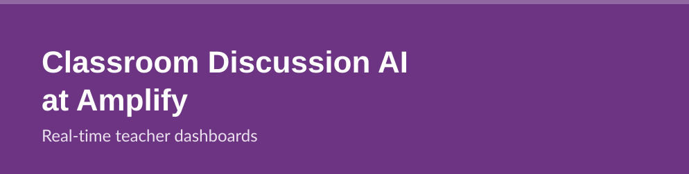
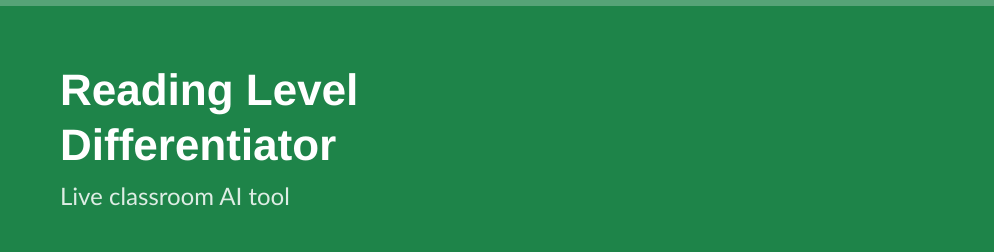
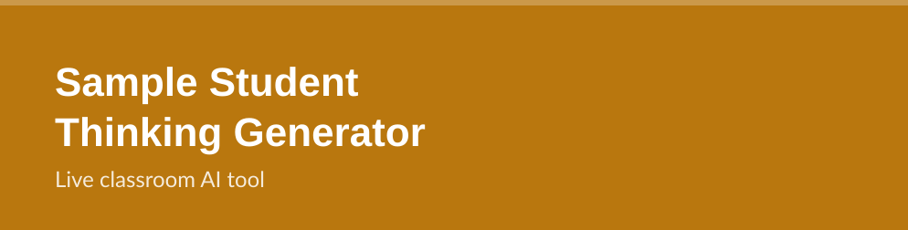

At Amplify I led product work on generative AI tools that support teachers during live instruction, including dashboard features that cluster real-time student discussion so a teacher can gauge what the whole room is thinking without reading 300 words mid-lesson. Amplify has written publicly about this class of feature, "Discussion Moments," in the context of Amplify Classroom.
At the Smithsonian Science Education Center I helped build the digital experiences behind freely available instructional units that integrate STEM and computational thinking, where elementary students work through real-world problems and scientific phenomena. The full library is free for any classroom.
Explore the Units
A free AI tool that rewrites a classroom passage at multiple reading levels, keeps the key vocabulary and meaning intact, and flags what a teacher should verify before using it. Built end to end, including the serverless backend, rate limiting, and analytics.
Try It Live
A free AI tool that generates realistic sample student responses to a teacher's own question, spanning grade-appropriate correctness and well-documented misconceptions, each with an asset-based read of what the response demonstrates. Built for "My Favorite No" style discussion prep.
Try It LiveA free, open AI Skill that turns a found lesson plan into a slide deck matching a school's own template, with openly licensed images and teacher notes. Part of a "Brief, Build, Check" pattern for classroom AI work that keeps the teacher in charge of judgment.
View on GitHub